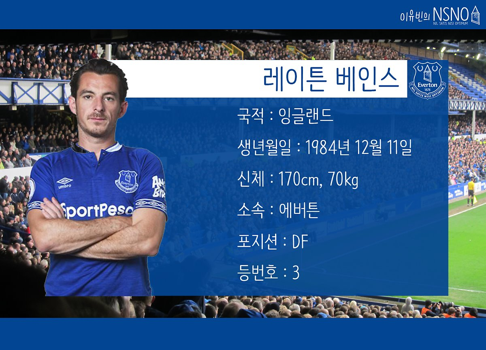

web
- html>
- css
- javascript
에버튼의 레전드 베인스>
에버튼이1년이란 오랜 시간 동안 왼쪽 수비수를 걱정하지 않았던 이유는 바로, 레이튼 베인스의 존재일 것이다. 에버튼의 ‘현재 진행형’ 전설이 되어가고 있는 베인스에 대해 글을 작성해보려고 한다.

레이튼 베인스
Leighton Baines
생년월일 : 1984년 12월 11일
신체 : 170cm, 70kg
에버튼
포지션 : DF
등번호 : 3
# 에버튼 입단 전 (유소년 ~ 2005/06 시즌)
에버튼의 충실한 일꾼, 레이튼 베인스는 클럽에 대한 사랑을 무한하게 표출하고 있는데 놀랍게도 에버튼이 아닌, 위건 애슬레틱 (이하 위건)에서 유소년 생활을 시작해서 데뷔를 이뤄냈다.
베인스는 2002/03 시즌, 올드햄 애슬레틱과의 경기에서 데뷔를 이루고 2004/05 시즌, 입스위치 타운과의 경기에서 데뷔골을 기록하게 되었다. 첫 데뷔골을 기록한 경기에서 아쉽게 2:1로 패배했지만 이 경기를 통해서 많은 축구 팬들의 주목을 받게 되었다. 그리고 잉글랜드 U-21의 일원이 되어서 국가를 대표할 수 있는 위치까지 오르면서 당시 잉글랜드 최고의 왼쪽 수비수인 애쉴리 콜의 후계자라는 호평을 받았다.
잉글랜드 챔피언십 (잉글랜드 2부리그)에 소속된 위건에서 꾸준히 주전 자리를 차지하며 2004/05 시즌에 최소 실점을 기록, 2위로 위건이 PL (프리미어 리그)로 향하는 데 큰 도움을 주었다.
위건의 승격을 도운 베인스는 상위 팀의 관심을 뿌리치고 의리를 선택했다. 그리고 2005/06 시즌, 유력한 강등 후보였던 위건을 10위까지 끌어올리면서 팀의 이변의 주역이 되었다. 이후 이어지는 2006/07 시즌에도 위건에 남으면서 강등권 싸움을 펼치다가 18위로 위건이 강등하게 되었고 새로운 도전을 원했던 베인스는 아스날, 에버튼, 맨체스터 유나이티드와 같은 다양한 클럽의 관심 대상이 되었다.
# 에버튼 입단 후 (2007/08 시즌 ~ 2017/18 시즌)
많은 클럽에게 관심을 받은 레이튼 베인스는 위건에게 제일 높은 이적료인 600만 파운드를 제안한 에버튼의 협상을 허락했고, 2007년 8월에 공식적인 에버튼의 선수가 되었다. 이적 당시, 머지사이드 출생의 베인스는 “내가 태어난 고향의 클럽과 계약해서 행복하다”며 만족감을 드러냈다.
에버튼에 입단한 베인스는 부상을 당하게 되면서 불안한 출발을 하게 되었다. 왼쪽 수비수가 급해진 에버튼은 중앙 수비수인 줄리온 레스콧을 왼쪽 수비수로 기용했고 의외로 좋은 경기력을 보여주게 되면서 자리를 잃었다. 하지만, 초반 부상을 제외하고는 대부분 경기를 주전으로 나서며 에버튼의 장기적인 왼쪽 수비수가 될 가능성이 커졌다.
그리고 2008/09 시즌, 에버튼의 왼쪽 미드필더인 ‘현 에버튼 엠버서더’ 스티븐 피에나르가 부상으로 빠지게 되면서 왼쪽 미드필더로 활약하게 되었지만, 피에나르가 복귀한 후에는 후보로 밀려나면서 기회를 잡지 못했다. 에버튼에서 암울한 미래를 그려가던 베인스는 주전 왼쪽 수비수인 조셉 요보가 부상으로 빠지게 되면서 자리를 차지하게 되었고 드디어 자신의 알맞은 옷을 입게 된 베인스는 피에나르와 왼쪽에서 환상적인 호흡을 자랑하며 에버튼의 후반기 상승세를 이끌었다.
후반기에 자리를 잡으면서 환상적인 경기력으로 많은 승점을 가져가게 한 베인스는 팀을 5위로 이끌었고 아쉽게 챔피언스 리그로 향하는 티켓을 얻진 못했지만, 에버튼은 장기적인 왼쪽 수비수를 얻게 되었다.
그리고 에버튼은 빌 켄라이트 구단주의 많은 지원을 받지 못하고 자금난에 시달렸다. 데이비드 모예스 감독은 저비용 고효율 선수를 영입하며 에버튼을 중상위권으로 꾸준히 올렸고 2012/13 시즌, 맨체스터 유나이티드의 전설적인 감독 알렉스 퍼거슨 감독이 은퇴를 선언하면서 후임 감독으로 떠나게 되었다.
맨유에 향한 모예스 감독은 자신의 애제자를 데려가고 싶어 했으며 그중에는 베인스를 포함한 마루앙 펠라이니가 모예스 감독의 관심을 받았다. 이에 펠라이니는 맨유로 떠나게 되었고 베인스 또한 맨유의 수비수 파트리스 에브라의 장기적인 대체자로 언급되었지만, 베인스는 에버튼에 남길 원했기 때문에 이적이 성사되지 않았다.
2013/14 시즌, 위건에서 좋은 모습을 보인 로베르토 마르티네즈 감독은 에버튼의 신임 감독이 되었고 마르티네즈 감독 또한, 베인스-콜먼의 오버래핑을 적극적으로 시도하는 감독이었기 때문에 두 선수의 활약이 중요했다. 베인스는 이런 감독의 바람대로 최고의 활약을 보이면서 본인 커리어 중에 제일 좋은 활약을 하며 급부상했다.
“모예스 감독이 떠난 빈자리가 크기 때문에 하위권에 위치할 것 같다”는 예상을 줄곧 해온 언론은 입을 다물게 되었고 되려, 맨유로 떠난 모예스 감독이 맨유에서 7위를 기록하며 경질에 이르렀다.
이렇게 철강왕의 모습을 보여주고 있는 베인스는 20대 후반의 나이에 접어들게 되었고 체력적인 부담 때문에 로테이션 자원이 필요했다. 루크 가버트, 타이터스 브라우닝, 브렌단 갈로웨이, 브라이언 오비에도와 같은 많은 선수가 베인스의 빈자리를 메꾸기 위해 노력했지만 부상 또는 좋지 못한 활약으로 팀에 큰 도움이 되지 못하고 베인스는 홀로 혹사했다.
그리고 2016/17 시즌, 마르티네스 감독이 떠나고 사우스햄튼의 로날드 쿠만 감독과 파하드 모시리 대주주가 오게 되면서 재정적으로 충분해진 에버튼은 핵심 자원 로스 바클리, 로멜루 루카쿠를 비롯한 톰 데이비스, 아데몰라 루크먼, 도미닉 칼버트-르윈과 같은 유망한 자원을 1군에 추가하면서 맨체스터 시티를 4:0으로 격파하는 등 엄청난 경기력과 함께 7위의 호성적을 냈다.
2017/18 시즌 또한, 좋은 성적을 낼 것 같던 에버튼은 맨유로 떠난 루카쿠의 빈자리를 막지 못하고 최악의 흐름을 이어갔다. 강등권을 걱정할 정도로 불안해진 수비-공격은 겉잡을 수도 없이 망가졌고 쿠만 감독 경질 후 데이비드 언스워스 임시 감독을 거쳐 샘 알라다이스 감독이 지휘봉을 잡은 후에 안정되었다.
팀이 2번의 감독이 바뀔 때, 베인스는 팀의 리더가 되어서 선수들을 독려하고 수비-공격의 안정되는 데 큰 힘이 되었다. 경기력보다 결과를 중요시하며 승점을 꾸준히 쌓아갔고 초반에 비해서는 좋은 성적인 8위로 마무리되었다.
# 이제는 은퇴를 바라봐야할 때 (2018/19 시즌 ~)
강등권을 벗어나고 8위로 진입하게 도와준 샘 알라다이스 감독은 갑작스럽게 경질이 되었다. 그 이유는 바로, 에버튼의 장기적인 프로젝트에 맞을만한 인물이 아니다는 이유다.
에버튼은 알라다이스 감독과 같은 구시대적이고 유행에 맞지 못한 전술을 구사하는 것이 맘에 들지 않았고 줄곧 인터뷰에서 좋지 못한 발언을 하는 것과 더불어 다양한 이유로 인해 경질된 것이다.
파하드 모시리 대주주의 돈으로 적극적인 지원을 하게 된 에버튼은 장기적이고 유행을 따르는 감독이 필요했고 로날드 쿠만 감독이 경질되었을 때, 눈여겨보던 왓포드의 마르코 실바 감독을 택했다.
쿠만 감독 경질 당시에도 에버튼의 보드진은 실바 감독을 원했지만 왓포드의 확고한 거절 의사 때문에 성사되지 않았었다. 하지만, 실바 감독은 에버튼과의 루머 이후에 좋지 못한 성적을 보이면서 경질되었기 때문에 보상금 없이 에버튼으로 향할 수 있었다.
에버튼으로 부임한 실바 감독은 세대교체에 눈을 돌렸다. 앞으로 에버튼의 목표를 충족하면서 실바 감독의 성향에 맞는 선수들을 원했다. 이에 이적시장 막판까지 히샤를리송, 뤼카 디뉴, 주앙 버지니아, 베르나르드, 예리 미나, 안드레 고메스, 커트 주마를 영입하며 최고의 이적시장을 보내게 되었다. 이 중 디뉴는 베인스의 로테이션 자원이자 대체자인 셈이다.
바르셀로나에서 뛰어난 기량을 지녔음에도 불구하고 경쟁자 호르디 알바가 좋은 활약을 보여준 탓에 많은 경기를 나서지 못한 디뉴는 새로운 도전을 원했고, 마침 에버튼은 왼쪽 자원이 필요했기 때문에 PL (프리미어 리그) 경험이 없지만 좋은 기량을 지닌 선수다고 판단해서 영입하게 되었다.
에버튼으로 향한 실바 감독은 리그 초반, 에버튼에 오래 남으면서 구단의 상황을 잘 알고 선수들을 잘 이해하는 선수들을 기용했다. 그중 베인스는 1라운드 울브스, 2라운드 사우스햄튼, 3라운드 본머스와의 경기에서 괜찮은 경기력을 보여주며 리그 3연속 무패행진에 큰 힘이 되었다.
그 후 허더즈필드와의 경기에서 디뉴를 시험했던 실바 감독은 디뉴의 1개의 도움을 포함한 활약에 만족했다. 체력 안배를 위해 후반에 베인스를 교체하면서 무한 경쟁을 예고했다. 하지만, 베인스는 현재 17라운드까지 진행된 리그 경기에서 단 한 번도 주전으로 나서지 못했다. 아직 날카로운 킥력과 준수한 속력을 지닌 베인스는 젊고 빠르고 역동적인 디뉴에게 경쟁이 되지 않겠다는 실바 감독의 판단으로 인해 벤치만 달구게 되었다.
근 10년 동안 주전 자리를 꿰찾았던 베인스의 이런 모습은 어색하기 그지없다. 하지만, 디뉴가 주전으로 활약하고 있다는 것은 베인스의 장기적인 대체자를 성공적으로 구하게 되었다는 긍정적인 신호이기 때문에 개인보다 팀을 중요시하는 베인스는 이러한 상황을 부정적이기보단, 긍정적으로 보고 있을 것이다.
2019년까지 계약을 체결하고 있는 베인스는 34살의 노장이 되었으며 연장 계약을 맺고 후보 선수로 남는 선택, 타 팀으로 이적해서 주전 자리를 계속 꿰찾는 선택, 은퇴 등등 많은 선택의 길에 놓여있다.
# 플레이 스타일
요즘 현대 축구가 원하는 전형적인 윙백 스타일의 선수지만 수비적-공격적으로 균형이 매우 뛰어나다. 작은 키를 가졌음에도 불구하고 공중볼 상황에서의 빠른 판단으로 어떻게 공을 탈취하는 것이 좋은 선택일지 잘 아는 선수다.
그리고 정확하고 빠른 슈팅을 구사할 수 있는 능력을 지닌 베인스는 프리킥, 코너킥, 페널티킥과 같은 세트피스를 모두 담당하고 있다.
많은 경험을 지닌 선수고 부주장으로 팀을 이끌만큼 리더쉽 또한 지녔다. 에버튼의 선수단이 좋은 분위기 속에서 축구 경기를 할 수 있는 이유는 베인스도 한몫한다.